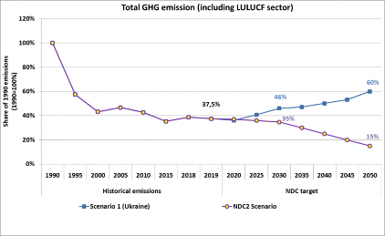

Updated Nationally Determined Contribution of Ukraine to the Paris Agreement
Ukraine as a Party of the United Nations Framework Convention on Climate (hereinafter – UNFCCC) and the Kyoto Protocol, recognizing the need for an effective and progressive response to the urgent threat of climate change and in accordance with decision 1/CP.19, prepared its Intended Nationally Determined Contribution (hereinafter - INDC) that was approved by the Governmental Decree dated September 16, 2015 # 980 and submitted it to the Secretariat of UNFCCC on September 19, 2016. Ukraine defined its target not to exceed 60 % of the 1990 greenhouse gas emissions (hereinafter - GHG) level in 2030.
Ukraine made a significant contribution to reducing global GHG emissions. As of 2019, GHG emissions in Ukraine decreased by 62.4% from the level of 1990 (including the sector «Land use, land-use change and forestry» (hereinafter - LULUCF) and by 64.8% from the level of 1990 (excluding the sector LULUCF).
Following the decision 1/CP.21, that requests those Parties whose INDC pursuant to decision 1/CP.20 contains a time frame up to 2030 to communicate or update by 2020 these contributions and to do so every five years thereafter pursuant to Article 4, paragraph 9, of the Paris Agreement, Ukraine is introducing its Updated Nationally Determined Contribution (hereinafter - NDC).
Despite the ongoing military aggression of the Russian Federation and temporary occupation of the Autonomous Republic of Crimea, the city of Sevastopol, as well as certain areas of Donetsk and Luhansk regions, the economic crisis of 2014-2015 and the COVID-19 pandemic, Ukraine has taken many steps to significantly reduce energy consumption, development of energy efficiency and renewable energy.
The share of renewable energy in electricity production increased from a total 7.9 % in 2015 to 11.3 % in 2020. During 2012-2019, there was also a significant reduction in the energy intensity of GDP. Among the important reforms the state program on energy efficiency and local co-financing programs should also be noted, which involved more than 860,000 families during 2014-2020. Moreover, the Energy Efficiency Fund was able to raise funds for energy efficiency and saved around 50 % on household bills. In 2020 it was also extended to budgetary institutions, such as schools, hospitals and others.
Since 2016, Ukraine has operated an energy service mechanism for the implementation of energy efficiency measures at municipal and state-owned facilities (budget institutions, such as schools, kindergartens). In total, from 2016 to 2020, more than 550 ESCO contracts were concluded, which contributed to energy savings of 35 %.
Based on geographical, economic and social circumstances, Ukraine has committed itself to achieving the target of reducing GHG emissions of 65% by 2030, compared to 1990 (including LULUCF), reaching carbon neutrality until 2060 as foreseen in the National Economic Strategy until 2030, approved by the Decree of the Cabinet of Ministers of Ukraine of March 3, 2021 # 179.

The Ukrainian NDC includes GHG emissions and targets for its uncontrolled and occupied territories, however the detailed information on the economic activities and GHG emissions on those territories is missing. This fact complicates, and sometimes makes impossible to collect and report data needed for the annual National GHG Inventory. Thus, for emission and reduction estimations on the temporarily occupied territory of Ukraine an expert estimation was performed.
After the reestablishment of Ukraine’s control over occupied and uncontrolled territories, the Ukrainian NDC should be adjusted according to the updated and verified data.
In line with Article 4, paragraph 8 of the Paris Agreement according to which “all Parties shall provide the information necessary for clarity, transparency and understanding” in accordance with decision 1/CP.21 and any relevant decisions of the Conference of the Parties serving as the meeting of the Parties to this Agreement.
|
1. Quantified information on the reference point (including, as appropriate, a base year): |
|
|
Reference year(s), base year(s), reference period(s) or other starting point(s) |
1990 |
|
Quantifiable information on the reference indicators, their values in the reference year(s), base year(s), reference period(s) for other starting point(s), and, as applicable, in the target year |
According to National Inventory Report 1990-2018, Ukraine GHG emissions, including LULUCF, amounted to 882.9 Mt CO2 equivalent in 1990. Quantification of the reference indicator will be based on the annual National GHG Inventory. The value may be updated to reflect GHG inventory recalculations, resulting from methodological improvements in IPCC Guidelines. |
|
For strategies, plans and actions referred to in Article 4, paragraph 6, of the Paris Agreement, or policies and measures as components of nationally determined contributions where paragraph 1(b) above is not applicable, Parties to provide other relevant information |
Not applicable (hereinafter - N/A). |
|
Target relative to the reference indicator, expressed numerically, for example in percentage or amount of reduction |
Economy-wide net domestic reduction of 65 % in GHG emissions by 2030 compared to 1990. |
|
Information on sources of data used in quantifying the reference point(s) |
National Inventory Report 1990-2018, Ukraine. |
|
Information on the circumstances under which the Party may update the values of the reference indicators |
Values of reference indicators may be updated due to methodological approach improvements to the GHG inventory. After the reestablishment of Ukraine’s control over temporarily occupied and uncontrolled territories, the Ukrainian NDC should be adjusted according to the updated and verified data. |
|
2. Time frames and/or periods for implementation |
|
|
Time frame and/or period for implementation, including start and end date, consistent with any further relevant decision adopted by the Conference of the Parties serving as the meeting of the Parties to the Paris Agreement (CMA) |
01 January 2021 – 31 December 2030. |
|
Whether it is a single-year or multi-year target, as applicable |
Single year target, 2030. |
|
3. Scope and coverage |
|
|
General description of the target |
Ukrainian NDC target corresponds to an economy- wide absolute GHG reduction of 65 % by 2030, compared to 1990 GHG emissions level. By 2030 Ukraine plans to create a baseline for adaptation to climate change in order to increase resilience and reduce vulnerability to climate change, as foresee in Article 7 of the Paris Agreement. The geographic scope: as shown by the country’s geopolitical boundaries. Ukraine’s NDC will be adjusted after the restoration of its territorial integrity and state sovereignty. |
|
Sectors, gases, categories and pools covered by the nationally determined contribution, including, as applicable, consistent with Intergovernmental Panel on Climate Change (IPCC) guidelines |
Gases covered: all GHGs not controlled by the Montreal Protocol – Carbon Dioxide (CO2), Methane (CH4), Nitrous Oxide (N2O), Hydrofluorocarbons (HFCs), Perfluorocarbons (PFCs), Sulphur Hexafluoride (SF6), Nitrogen Trifluoride (NF3); Economic sectors covered: energy; industrial processes and product use; agriculture, land use, land-use change and forestry; waste; Percentage of GHG emissions covered: 100 %. |
|
How the Party has taken into consideration paragraphs 31(c) and (d) of decision 1/CP.21 |
Ukraine has included all categories of anthropogenic GHG emissions and removals in accordance with methodologies and common metrics assessed by the IPCC, thus taking into consideration paragraph 31(c) and (d) of decision 1/CP.21. |
|
Mitigation co-benefits resulting from Parties’ adaptation actions and/or economic diversification plans, including description of specific projects, measures and initiatives of Parties’ adaptation actions and/or economic diversification plans |
N/A |
|
4. Planning process |
|
|
Information on the planning processes that the Party undertook to prepare its nationally determined contribution and, if available, on the Party’s implementation plans, including, as appropriate: |
|
|
Domestic institutional arrangements, public participation and engagement with local communities and indigenous peoples, in a gender-responsive manner |
The NDC review process started in 2018 under the leadership of the National Government of Ukraine and in cooperation with a team of national and international experts, provided through the technical support of the European Bank for Reconstruction and Development project "Support to the Government of Ukraine on Updating its Nationally Determined Contribution (NDC)", which was funded by the Government of Sweden. Public participation and transparency of the process was assured through setting up a large Working Group under the Ministry of Environmental Protection and Natural Resources of Ukraine, which included representatives from all relevant Ministries, Parliament Committees, scientific institutions, business associations and non-governmental organizations. The Working Group was gathered 5 times (February 2019, July 2019, February 2020, May 2020, November 2020) at every stage of the process to present and collect comments on the input data, methodologies selected, preliminary modelling results and final documents. All the reports were also published at the website of the Ministry with open public access. In the frame of preparing NDC gender analysis was also conducted and recommendations were made to analyse the status of different groups of women and men in the areas involved in climate change mitigation, analysis of women's access to climate policy decision-making, as well as the impact of gender on readiness to accept and promote change in various sectors of economy, impact of climate change on gender and analysis for gender equality in Ukraine. In order to analyse modelled scenarios and discuss possibilities to achieve GHG emission reduction targets and attract necessary investments, more than 20 additional meetings were organized with the main sectoral stakeholders. |
|
Contextual matters, including, inter alia, as appropriate: |
|
|
National circumstances, such as geography, climate, economy, sustainable development and poverty eradication |
Ukraine is located in the eastern Europe and is one of the largest countries in terms of territory (603,628 km2) and population (42 million people). The forest in Ukraine covers around 15,9 % of the total territory of the country. 6 % of the country’s territory is protected. Agricultural lands in Ukraine cover 68 % of the territory. GDP per capita in 2020 was USD 3726.94. Total GDP in 2020 accounted for USD 155.6 billion (in current prices). In 2020 GDP per capita in Ukraine was 5.2 times lower than the average in Central Europe. Ukraine ranks 56th in the world by the size of nominal GDP in absolute terms, and 119th by size of GDP per capita. After the economic crisis Ukraine will reach the level of the nominal GDP of 2013 only in 2021. Despite progress in the fight against poverty, the number of people whose daily spending is lower than the established purchasing power parity (USD 5.05) increased from 1% in 2014 to 2.2% in 2015. In 2015 the number of people whose total expenses were lower than the actual living wage increased more than twice (from 28.6% to 58.3%). One of the main obstacles on the way to achieving GHG emissions reduction is the armed aggression of the Russian Federation and temporary occupation of the Autonomous Republic of Crimea, the city of Sevastopol as well as certain areas of Donetsk and Luhansk regions (approximately 7 percent of the territory of Ukraine), which requires significant political, financial and human resources for protection of the territorial integrity and sovereignty of Ukraine. The ongoing military aggression of the Russian Federation against Ukraine has a strong negative impact on the overall economic situation in Ukraine and has led to a reduction in industrial production. All of the above-mentioned factors together with low incomes of the population lead to energy poverty. According to the results of the survey, the majority of the population of the country considers payment for utilities to be quite problematic. In 2019, 65 % of the population applied for state subsidies to pay for utilities. Ukraine has substantially reduced GHG emissions since 1990 due to transformations that did not lead to steady economic growth. The total amount of GHG emissions in Ukraine in 2019 amounted to 332.2 Mt CO2 equivalent (including LULUCF) that is 37.6 % of the 1990 level. Ukraine ranks first among the 45 Parties of the Annex I to the UNFCCC in achieving GHG emissions reduction (excluding the LULUCF sector) and fourth in achieving GHG emissions reduction including the LULUCF sector as compared to 1990. Thus, Ukraine's GHG emissions reduced on 62.4% from the 1990 level (including LULUCF) and on 64.8% from the 1990 level (excluding LULUCF). Further GHG emissions reduction in Ukraine is possible through the implementation of structural sectoral reforms and transformations, that will also ensure sustainable economic growth. In particular, this means completing the structural changes of the energy markets. Liberalization of the gas and electricity markets contributes towards the implementation of policies on energy efficiency and investments in renewable energy. Today 63 % of electricity generated in Ukraine is low-carbon in terms of GHG emissions. This is achieved both through the high share of nuclear and hydro generation and by increasing the share of renewable energy. Further decarbonisation of energy sector depends on the efficiency of energy markets and their full integration into the EU markets within the framework of the Association Agreement between the European Union and the European Atomic Energy Community and their member states, of the one part, and Ukraine, of the other part, and within the framework of the Agreement on the Establishment of the Energy Community with Ukraine. GHG emissions reduction has also a significant social aspect associated with just transition of coal regions as well as thermal energy generation. Ukrainian economy is export-dependent. 48% of GDP is generated from the export of goods and services. For the modernization of the industrial sector it is important to preserve and increase access of Ukrainian goods to foreign markets, including the markets of the EU countries. Taking into account the great deterioration of the main assets of large enterprises, modernization of the economy and ensuring sustainable economic development depends on the inflow of investments from both private sources and international financial institutions. According to estimations, the amount of capital investments until 2030, necessary for the implementation of the NDC is 102 billion euro. Access to investments mainly depends on the macrofinancial stability of Ukraine. After the dramatic crisis of 2014-2015, Ukraine was able to restore its macrofinancial stability, but still depends on the support of the International Monetary Fund (IMF). In spite of the national circumstances, Ukraine aims to continue reducing GHG emissions, energy intensity of GDP and achieving the Sustainable Development Goals. Over the past few years, Ukraine has started to actively implement energy efficiency and environmental protection policies and promote economic modernization. In particular, such key legislative and regulatory acts were adopted:
|
|
Best practices and experience related to the preparation of the nationally determined contribution; |
It is worth noting the positive experience of conducting a detailed modelling of the country's economy system. The modelling covered all economic sectors and made it possible to analyse different scenarios of economic development, the impact of existing climate and energy plans and strategies, as well as additional necessary policies and measures. The process of NDC preparation is characterized by inclusiveness and openness for discussion and comments with the involvement of stakeholders and the public at all stages. The central executive bodies were also involved in the working group at all stages of the process of NDC preparation, which positively influenced the further negotiation of the document. |
|
Other contextual aspirations and priorities acknowledged when joining the Paris Agreement |
N/A |
|
Specific information applicable to Parties, including regional economic integration organizations and their member States, that have reached an agreement to act jointly under Article 4, paragraph 2, of the Paris Agreement, including the Parties that agreed to act jointly and the terms of the agreement, in accordance with Article 4, paragraphs 16–18, of the Paris Agreement |
N/A |
|
How the Party’s preparation of its NDC has been informed by the outcomes of the global stocktake, in accordance with Article 4, paragraph 9, of the Paris Agreement; |
N/A |
|
Each Party with an NDC under Article 4 of the Paris Agreement that consists of adaptation action and/or economic diversification plans resulting in mitigation co-benefits consistent with Article 4, paragraph 7, of the Paris Agreement to submit information on: |
N/A |
|
How the economic and social consequences of response measures have been considered in developing the NDC |
N/A |
|
Specific projects, measures and activities to be implemented to contribute to mitigation co-benefits, including information on adaptation plans that also yield mitigation co-benefits, which may cover, but are not limited to, key sectors, such as energy, resources, water resources, coastal resources, human settlements and urban planning, agriculture and forestry; and economic diversification actions, which may cover, but are not limited to, sectors such as manufacturing and industry, energy and mining, transport and communication, construction, tourism, real estate, agriculture and fisheries |
N/A |
|
5. Assumptions and methodological approaches, including those for estimating and accounting for anthropogenic greenhouse gas emissions and, as appropriate, removals: |
|
|
Assumptions and methodological approaches used for accounting for anthropogenic greenhouse gas emissions and removals corresponding to the Party’s NDC, consistent with decision 1/CP.21, paragraph 31, and accounting guidance adopted by the CMA |
In accordance with paragraph 31 and of decision 1/CP.21, Ukraine reports on GHG emissions and removals using the methodology developed by the IPCC and adopted by the Conference of the Parties. |
|
Assumptions and methodological approaches used for accounting for the implementation of policies and measures or strategies in the NDC |
N/A |
|
If applicable, information on how the Party will take into account existing methods and guidance under the Convention to account for anthropogenic emissions and removals, in accordance with Article 4, paragraph 14, of the Paris Agreement, as appropriate |
Ukraine uses methodology IPCC 2006 Guidelines as per UNFCCC decision 24/CP.19 to prepare National GHG Inventory in order to promote environmental integrity, transparency, accuracy, completeness, comparability and consistency, and ensure the avoidance of double counting, in accordance with guidance adopted by the Conference of the Parties serving as the meeting of the Parties to this Agreement according to paragraph 14, Article 4 of the Paris Agreement. |
|
IPCC methodologies and metrics used for estimating anthropogenic greenhouse gas emissions and removals |
Ukraine uses methodology IPCC 2006 Guidelines as per UNFCCC decision 24/CP.19 to prepare National GHG Inventory. Where it would be appropriate, Ukraine also used the appropriate national methodologies, agreed with methodologies and refinements of the 2019. Global warming potential (GWP) values relative to CO2 values from the IPCC Fourth Assessment Report are used. |
|
Sector-, category- or activity-specific assumptions, methodologies and approaches consistent with IPCC guidance, as appropriate, including, as applicable: |
Ukraine considers general guidance on reporting required under UNFCCC, established by Decision 4/CP.5 applicable for reporting of National Communications. |
|
i. Approach to addressing emissions and subsequent removals from natural disturbances on managed lands; |
All emissions and subsequent removals from natural disturbances on managed lands are included into accounting based on IPCC 2006 Guidelines as per UNFCCC decision 24/CP.19. |
|
ii. Approach used to account for emissions and removals from harvested wood products; |
Harvested wood products are included according to IPCC 2006 Guidelines as per UNFCCC decision 24/CP.19. |
|
iii. Approach used to address the effects of age-class structure in forests; |
Age-class structure was considered in the development of NDC. The methodological approach is in line with methodological principles of IPCC 2006 Guidelines as per UNFCCC decision 24/CP.19 and IPCC 2013 Revised Supplementary Methods and Good Practice Guidance Arising from the Kyoto Protocol as per UNFCCC decisions 2/CMP.6 and 2/CMP.7. |
|
Other assumptions and methodological approaches used for understanding the NDC and, if applicable, estimating corresponding emissions and removals, including: |
|
|
(i) How the reference indicators, baseline(s) and/or reference level(s), including, where applicable, sector-, category- or activity-specific reference levels, are constructed, including, for example, key parameters, assumptions, definitions, methodologies, data sources and models used |
Modelling the level of GHG emissions in Ukraine included three main scenarios of economic development that vary depending on the level of climate ambition. Despite the fact that the GHG reduction target is set for 2030, the necessary policies and measures until 2050 have also been taken into account in order to include the long-term decarbonisation target. The proposed methodology and approaches to assessing the level of GHG emissions consist of several mathematical models such as the TIMES- Ukraine relevant for the Energy and Industrial Processes sectors (according to the IPCC categories), mass balance model for Waste sector and specific simulation tools for the Agriculture and LULUCF. All the investigated decarbonisation pathways were based on the successive macroeconomic scenario provided by the Dynamic Ukrainian General Equilibrium model (UGEM). For the purpose of wide communication with all stakeholders, the Analytical Review of the NDC was prepared, which includes information on the modelling process, sectoral goals on GHG emission reduction, adaptation to climate change, gender issues, as well as the necessary amount of investment for the implementation of the climate goals and achieving the long-term goal on climate neutrality, which is available by the link: https://mepr. gov.ua/files/images/2021/29042021/Analytical%20R eport_%20Project_EN.PDF. Due to the current financial situation Ukraine needs to mobilize a significant amount of climate finance both public and private, which will contribute to this economic growth. Both public and private finances should be invested in the decarbonisation of various sectors: energy, industry, transport, residential sector, agriculture, waste and LULUCF. For the implementation of current and planned policies and the necessary transformations, Ukraine will need access to international climate finance. |
|
(ii) For Parties with NDCs that contain non-greenhouse-gas components, information on assumptions and methodological approaches used in relation to those components, as applicable |
N/A |
|
(iii) For climate forcers included in NDCs not covered by IPCC guidelines, information on how the climate forcers are estimated; |
N/A |
|
(iv) Further technical information, as necessary |
All technical reports, including the modelling and a detailed list of policies and measures used to inform the preparation and consultations of the NDC throughout its process, are available on the official website of the Ministry of Environmental Protection and Natural Resources of Ukraine: https://mepr.gov.ua/news/33080.html. |
|
The intention to use voluntary cooperation under Article 6 of the Paris Agreement, if applicable. |
Ukrainian target of 65 % net reductions by 2030 compared to 1990 is to be achieved at the national level and requires active international cooperation in accordance with Article 6 of the Paris Agreement, access to financial resources and technology transfer. Ukraine has joined the Climate Market Club, which is supported by the UNFCCC Secretariat and is chaired by the Working Group of International Financial Institutions (MDBs) under Article 6 of the Paris Agreement in order to work to comply with and implement the principles of environmental sustainability. |
|
6. How the Party considers that its NDC is fair and ambitious in light of its national circumstances |
|
|
How the Party considers that its NDC is fair and ambitious in the light of its national circumstances |
Ukraine has made a significant contribution to the reduction of global GHG emissions and ranks first among the 45 Parties to the UNFCCC Annex I for the achieved GHG emissions reduction excluding the LULUCF sector and fourth for the level of GHG emissions reduction including the LULUCF. During the 11 years of Ukraine's obligations under the Kyoto Protocol to the UNFCCC (from 2008 to 2018), Ukraine has totally reduced its GHG emissions by nearly 4.4 billion tons of CO2 equivalent compared to the permitted levels of emissions during this period, which is close to 10% of the current annual global emissions. At the same time, Ukraine's overall economic and social development since 1990 has been marked by a decline in population wellbeing, de-industrialization and deterioration of public finances. At the same time, the low level of income leads to the use and purchase of used consumer goods and equipment, comparing to more climate friendly and expensive goods and technologies. The implementation of the NDC goals by 2030 is consistent with the completion of structural reforms in many spheres of economy and social life. Ukraine’s NDC provides for further reduction of GHG emissions, taking into account the previous significant reductions, in the conditions of ensuring economic development, and is ambitious and relevant, allowing implementation of climate policy in the context of all the Sustainable Development Goals. The military aggression of the Russian Federation and its temporarily occupation of the Autonomous Republic of Crimea, the city of Sevastopol, as well as certain areas of Donetsk and Luhansk regions require the involvement of significant political, financial and human resources to protect the territorial integrity and sovereignty of Ukraine and have a significant negative impact on the economic situation in Ukraine. The foundation for achieving the NDC is linked to the transformation of the energy sector, the success of which depends on support provided to the Government of Ukraine on:
The amount of additional investment necessary to deviate from the "Business as usual" scenario and achieve the NDC’s target is 102 billion euro. Access to finance also depends on the strengthening of macrofinancial stability of Ukraine, which is currently implementing the program of cooperation with the International Monetary Fund. By implementing such an ambitious NDC in the period up to 2030, Ukraine will be able to solve the significantly larger investments needed to achieve a climate-neutral economy in 2060. Taking into account limited access of Ukraine to international climate financing (in particular to Green Climate Fund), Ukraine expects to receive additional climate financing in the form of grants from developed countries and other donors, soft loans and other financial instruments for the purpose of creation of a separate climate fund and increase funding for the decarbonisation of the economy through commercial banks and the private sector. The lack of necessary international support puts on the risk of achieving the goal of the NDC. |
|
Fairness considerations, including reflecting on equity |
Ukraine’s NDC is consistent with global mitigation efforts to limit global warming to well-below 2°C and Ukraine considers it to be a fair contribution to reach this goal. |
|
How the Party has addressed Article 4, paragraph 3, of the Paris Agreement |
Ukraine’s NDC represents a progression of the previously communicated INDC of GHG emission levels not exceeding 60% of 1990 emissions in 2030. This holds, especially taking into account the importance of economic recovery from the military aggression and the COVID-19 pandemic. With this ambitious target Ukraine recognizes the importance of climate change mitigation and its role to contribute its fair share to limit global warming to well below 2°C, taking into account Article 4, paragraph 3 of the Paris Agreement. |
|
How the Party has addressed Article 4, paragraph 4, of the Paris Agreement |
Ukraine complies with this provision by having an economy-wide absolute target. |
|
How the Party has addressed Article 4, paragraph 6, of the Paris Agreement |
N/A |
|
7. How the NDC contributes towards achieving the objectives of the Convention as set out in its Article 2 |
|
|
How the NDC contributes towards achieving the objective of the Convention as set out in its Article 2; |
Ukraine commits to reduce emissions by 65% of 1990 GHG emissions level in 2030 (including LULUCF) and hereby contributes to hold the increase in global average temperature at well below 2°C. The commitment shows progress in emissions reduction comparing to the previous INDC. Moreover, it ensures a low greenhouse gas development that does not threaten Ukraine’s food production and that the Ukrainian economy can develop in a sustainable manner. |
|
How the NDC contributes towards Article 2, paragraph 1(a), and Article 4, paragraph 1, of the Paris Agreement. |
Ukraine’s NDC is consistent with a trajectory to achieve net zero GHG emissions not later than 2060. |